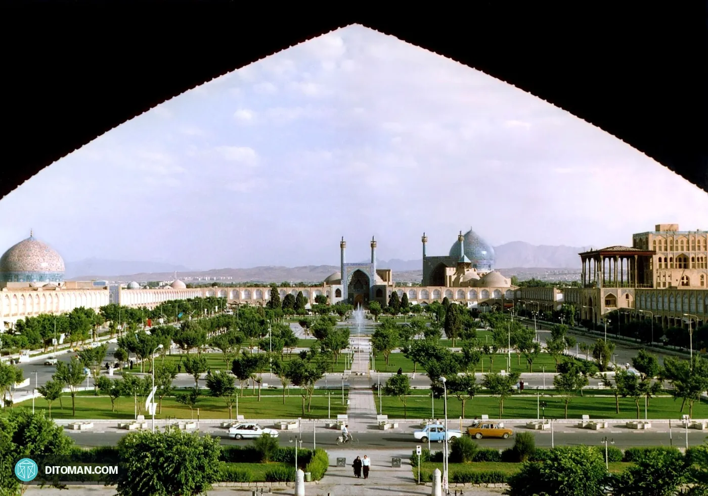

۳۰ اثر ایران در فهرست میراث جهانی یونسکوIran's 30 UNESCO World Heritage Sites
از تخت جمشید در ۱۹۷۹ تا قلعهی الموت در ۲۰۲۶؛ همهی آثار ایران در فهرست میراث جهانی، به ترتیب سال ثبت، با عکس و خلاصهای کوتاه. چند تا از آنها را حتی بسیاری از خود ما هم نمیشناسیم.From Persepolis in 1979 to Alamut in 2026: every Iranian site on the World Heritage List, in order of inscription, with photos and a short note. Some of them are little known even inside Iran.
۳۰30اثر ثبتشدهinscribed sites
۲۸ + ۲28 + 2فرهنگی + طبیعیcultural + natural
۱۹۷۹1979نخستین ثبت، سه اثرfirst listing, three sites
۵۷57اثر در فهرست انتظارon the tentative list
3121111212112211121111
1979200320152026
بعد از سه ثبت سال ۱۹۷۹، ایران ۲۴ سال اثری به فهرست اضافه نکرد. از ۲۰۰۳ به بعد تقریباً هر سال یک اثر تازه ثبت شده است.After the first three in 1979, Iran added nothing for 24 years. Since 2003 a new site has been inscribed almost every year.
شگفتانگیزهایی که کمتر کسی میداندSurprises few people know
ایران در برابر همسایهها و جهانIran against its neighbours and the world
ایران با ۳۰ اثر، دهمین کشور جهان در فهرست میراث جهانی است؛ جلوتر از ژاپن و آمریکا (هر کدام ۲۷ اثر) و ترکیه (۲۲ اثر). در منطقه فقط روسیه (۳۳ اثر) از ایران جلوتر است، ولی جمعیتش بیش از یکونیم برابر ایران است. اگر تعداد آثار را بر جمعیت تقسیم کنیم، ایران با حدود ۳٫۲ اثر به ازای هر ۱۰ میلیون نفر، از ترکیه (۲٫۵)، روسیه (۲٫۳)، عربستان (۲٫۳) و عراق (۱٫۳) بالاتر است. کشورهای کوچک مثل ارمنستان و عمان در این شاخص بالا میآیند، چون جمعیتشان کم است.With 30 sites Iran ranks 10th in the world, ahead of Japan and the United States (27 each) and Turkey (22). In the region only Russia (33) is ahead, with more than one and a half times Iran's population. Per 10 million people Iran has about 3.2 sites, more than Turkey (2.5), Russia (2.3), Saudi Arabia (2.3) and Iraq (1.3). Small countries such as Armenia and Oman score high on this measure because their populations are small.
کشورCountry
آثار جهانیSites
جمعیت ۲۰۲۶ (میلیون)Population 2026 (m)
اثر به ازای هر ۱۰ میلیون نفرSites per 10m people
ایتالیاItaly
۶۲62
۵۸٫۹58.9
۱۰٫۵10.5
چینChina
۶۱61
۱۴۱۲٫۹1,412.9
۰٫۴0.4
آلمانGermany
۵۵55
۸۳٫۶83.6
۶٫۶6.6
روسیهRussia
۳۳33
۱۴۳٫۴143.4
۲٫۳2.3
ایرانIran
۳۰30
۹۳٫۲93.2
۳٫۲3.2
ترکیهTurkey
۲۲22
۸۷٫۹87.9
۲٫۵2.5
عربستانSaudi Arabia
۸8
۳۵٫۲35.2
۲٫۳2.3
عراقIraq
۶6
۴۸٫۰48.0
۱٫۲1.2
پاکستانPakistan
۶6
۲۵۹٫۳259.3
۰٫۲0.2
آذربایجانAzerbaijan
۵5
۱۰٫۴10.4
۴٫۸4.8
ترکمنستانTurkmenistan
۵5
۷٫۷7.7
۶٫۵6.5
عمانOman
۵5
۵٫۷5.7
۸٫۸8.8
اماراتUAE
۳3
۱۱٫۶11.6
۲٫۶2.6
ارمنستانArmenia
۳3
۲٫۹2.9
۱۰٫۲10.2
افغانستانAfghanistan
۲2
۴۵٫۰45.0
۰٫۴0.4
تعداد آثار پس از اجلاس ۲۰۲۶ بوسان (StatRanker، اکتبر ۲۰۲۶)؛ جمعیت برآورد سازمان ملل برای ۲۰۲۶. آثار مشترک بین چند کشور برای هر کشور یک بار شمرده میشوند.Site counts after the 2026 Busan session (StatRanker, Oct 2026); population is the UN estimate for 2026. Sites shared between countries count once for each.
از میراث تا ارز: فرصت گردشگریFrom heritage to hard currency: the tourism opportunity
ایران در سال ۱۴۰۳ حدود ۷٫۴ میلیون ورود اتباع خارجی و حدود ۷٫۴ میلیارد دلار درآمد گردشگری اعلام کرد (این عدد همهی ورودهای مرزی، از جمله زائران را میشمارد). ترکیه با ۲۲ اثر جهانی، در ۲۰۲۵ حدود ۵۲٫۸ میلیون گردشگر خارجی و ۶۵٫۲ میلیارد دلار درآمد داشت؛ نزدیک ۹ برابر ایران. یعنی ایران آثار بیشتری دارد، اما هنوز سهم کوچکی از درآمد گردشگری منطقه را میگیرد. هدف برنامهی هفتم توسعه، رسیدن به ۱۵ میلیون گردشگر خارجی است. اگر درها بازتر شود و پرواز، ویزا، پرداخت بینالمللی و هتلها آماده باشند، همین ۳۰ اثر میتوانند یکی از بزرگترین منابع ارزی و اشتغال کشور شوند.In the Iranian year to March 2025, Iran reported about 7.4 million foreign arrivals and about $7.4 billion in tourism revenue (border entries, including pilgrims). Turkey, with 22 World Heritage Sites, had about 52.8 million foreign visitors and $65.2 billion in tourism income in 2025, nearly nine times Iran's. Iran has more sites but still earns a small share of the region's tourism income. The Seventh Development Plan targets 15 million foreign visitors. If the doors open wider and flights, visas, international payments and hotels are ready, these 30 sites could become one of the country's largest sources of foreign currency and jobs.
آیا ثبت جهانی خودبهخود گردشگر میآورد؟ نه همیشه. یک فراتحلیل ۴۳ مطالعه (Annals of Tourism Research، ۲۰۱۹) اثر میانگین معناداری پیدا نکرد، اما پژوهشهایی دربارهی کشورهای در حال توسعه و چین اثر مثبت دیدهاند. ثبت جهانی در را باز میکند؛ زیرساخت، تبلیغ و دسترسی است که گردشگر را میآورد.Does a listing bring tourists by itself? Not always. A meta-analysis of 43 studies (Annals of Tourism Research, 2019) found no significant average effect, while studies of developing countries and China found positive effects. Listing opens the door; infrastructure, promotion and access bring the visitors.
همهی آثار، به ترتیب سال ثبتEvery site, by year of inscription

۱۹۷۹1979فرهنگیCultural
میدان نقش جهانNaqsh-e Jahan Square
اصفهانIsfahan
میدان صفوی اصفهان از اوایل قرن هفدهم، با مسجد شاه، مسجد شیخ لطفالله، عالیقاپو و سردر بازار؛ از بزرگترین میدانهای شهری جهان.Isfahan's early 17th-century Safavid square, framed by the Shah Mosque, Sheikh Lotfollah Mosque, Ali Qapu and the bazaar gate; one of the largest city squares in the world.
پایتخت تشریفاتی هخامنشیان که ساختش از حدود ۵۱۸ پیش از میلاد روی یک صفهی بزرگ سنگی آغاز شد؛ از نخستین سه اثر ایرانی در فهرست جهانی.The Achaemenid ceremonial capital, begun around 518 BCE on a vast stone terrace; one of Iran's first three World Heritage sites.
شهر مقدس ایلامی از حدود ۱۲۵۰ پیش از میلاد با زیگوراتی که هرگز تمام نشد؛ از معدود زیگوراتهای بازمانده بیرون از میانرودان.An Elamite holy city from around 1250 BCE whose ziggurat was never finished; one of the few ziggurats surviving outside Mesopotamia.
پرستشگاه زرتشتی آتش و معبد آناهیتای دورهی ساسانی، دور یک دریاچهی چشمهای در درهای آتشفشانی؛ نخستین ثبت ایران پس از ۲۴ سال وقفه.A Sasanian Zoroastrian fire sanctuary and temple to Anahita around a spring-fed lake in a volcanic valley; Iran's first inscription after a 24-year gap.
ارگ خشتی بم، بزرگترین بنای خشتی جهان، که پس از زلزلهی ۱۳۸۲ ثبت شد و تا ۲۰۱۳ در فهرست میراث در خطر بود.The mud-brick citadel of Bam, among the largest earthen structures in the world, inscribed after the 2003 earthquake and on the List in Danger until 2013.
نخستین پایتخت هخامنشی که کوروش بزرگ بنیاد گذاشت، با آرامگاه کوروش و قدیمیترین نمونهی شناختهشدهی باغ ایرانی چهاربخشی.The first Achaemenid capital, founded by Cyrus the Great, with his tomb and the earliest known example of the four-part Persian garden.
آرامگاه اولجایتو (۱۳۰۲ تا ۱۳۱۲ میلادی) با یکی از بزرگترین گنبدهای آجری جهان و از نخستین گنبدهای دوپوسته.The mausoleum of Oljaytu (1302–1312), with one of the largest brick domes in the world and one of the earliest double-shelled domes.
سنگنوشتهی سهزبانهی داریوش بزرگ از ۵۲۱ پیش از میلاد؛ کلیدی که خواندن خط میخی را برای پژوهشگران ممکن کرد.Darius the Great's trilingual rock inscription of 521 BCE; the key that let scholars decipher cuneiform.
مجموعهی کلیساهای ارمنی ایرانArmenian Monastic Ensembles of Iran
آذربایجان غربی و شرقیWest and East Azerbaijan
سه مجموعهی کلیسایی، از جمله قرهکلیسا (تادئوس مقدس)، که از قرن هفتم تا شانزدهم میلادی شکل گرفتهاند.Three monastic ensembles, including Saint Thaddeus (Qara Kelisa), built between the 7th and 16th centuries.
سازههای آبی شوشترShushtar Historical Hydraulic System
خوزستانKhuzestan
شبکهای از بند، کانال، تونل و آسیاب آبی که ریشهاش به زمان داریوش میرسد؛ مهندسی آب دوهزارساله که هنوز دیدنی است.A network of weirs, canals, tunnels and water mills with roots in the time of Darius; water engineering more than two thousand years old.
بقعهی شیخ صفیالدین اردبیلیSheikh Safi al-din Khanegah and Shrine Ensemble
اردبیلArdabil
مجموعهی خانقاه و آرامگاه شیخ صفی (قرن ۱۶ تا ۱۸) با مسیری هفتمرحلهای و هشت در، به نشانهی هفت مرحلهی سلوک صوفیانه.Sheikh Safi's Sufi khanegah and shrine (16th–18th centuries), entered along a seven-stage path with eight gates mirroring the stages of Sufi mysticism.
مجموعهی بازار تاریخی تبریزTabriz Historic Bazaar Complex
آذربایجان شرقیEast Azerbaijan
یکی از بزرگترین بازارهای سرپوشیدهی جهان در مسیر جادهی ابریشم که هنوز بازار زندهی شهر است.One of the largest covered bazaars in the world, on the Silk Road, and still the city's working market.
نُه باغ، از باغ ارم شیراز و فین کاشان تا شاهزادهی ماهان، که الگوی چهارباغ ایرانی را از هند تا اسپانیا رساندهاند.Nine gardens, from Eram in Shiraz and Fin in Kashan to Shazdeh in Mahan, whose four-part plan shaped gardens from India to Spain.
برج آرامگاهی ۵۳ متری از سال ۱۰۰۶ میلادی؛ بلندترین برج تمامآجری جهان که هزار سال است ایستاده.A 53-metre tomb tower built in 1006 CE, often called the tallest all-brick tower in the world, standing for a thousand years.
مسجدی که از سال ۸۴۱ میلادی بارها بازسازی و افزوده شده؛ کتاب زندهی دوازده قرن معماری ایرانی و نمونهی نخستین مسجد چهارایوانی.A mosque rebuilt and extended since 841 CE: twelve centuries of Iranian architecture in one place, and the prototype of the four-iwan mosque.
مجموعهی کاخ قاجاری در قلب تهران که هنر ایرانی و اروپایی قرن نوزدهم را در هم آمیخته است.The Qajar palace complex at the heart of Tehran, blending 19th-century Persian and European art.
شهر عصر مفرغ که حدود ۱۸۰۰ پیش از میلاد رها شد؛ کاوشها در آن قدیمیترین چشم مصنوعی شناختهشده و جامی با نقش بزی متحرک را یافتهاند.A Bronze Age city abandoned around 1800 BCE; digs there found the oldest known artificial eye and a bowl whose drawings of a goat read like an early animation.
روستایی که مردمش هنوز زمستان را در خانههای کندهشده در دل کوه میگذرانند و در بهار و تابستان به کوهستان کوچ میکنند.A village whose people still spend winter in homes carved into the soft rock and move up the mountain in spring and summer.
Photo: Ninara from Helsinki, Finland · CC BY 2.0 · Wikimedia Commons
۲۰۱۵2015فرهنگیCultural
شوشSusa
خوزستانKhuzestan
تپههایی با لایههای سکونت پیوسته از هزارهی پنجم پیش از میلاد تا قرن سیزدهم میلادی؛ از کهنترین شهرهای جهان و پایتخت داریوش.Mounds holding layers of settlement from the 5th millennium BCE to the 13th century CE; one of the oldest cities in the world and a capital of Darius.
کرمان و سیستان و بلوچستانKerman and Sistan and Baluchestan
نخستین اثر طبیعی ایران در فهرست جهانی؛ کلوتهای بادتراش آن چشمگیرند و ماهوارهها داغترین دمای سطح زمین را بارها همینجا ثبت کردهاند.Iran's first natural World Heritage site, famous for wind-carved yardangs (kaluts); satellites have repeatedly measured the hottest land-surface temperatures on Earth here.
یازده قنات در شش استانEleven qanats in six provinces
یازده قنات، از جمله قصبهی گناباد، که با شیب ملایم آب زیرزمینی را بی پمپ و برق به روستا و مزرعه میرسانند؛ فناوریای که ایران به جهان داد.Eleven qanats, including Qasabeh in Gonabad, carrying groundwater by gentle gradient to villages and fields without any pump; a technology Iran gave the world.
شهری خشتی در دل کویر با بادگیرها، قناتها و کوچههای سایهدار که نشان میدهد چطور میشود در بیابان خنک زندگی کرد.An earthen city in the desert, with windcatchers, qanats and shaded lanes that show how to live cool in the heat.
منظر باستانشناختی ساسانی فارسSassanid Archaeological Landscape of Fars
فارسFars
هشت محوطه در فیروزآباد، بیشاپور و سروستان: شهرهای طراحیشده، کاخها و نقشبرجستههای آغاز دورهی ساسانی.Eight sites in Firuzabad, Bishapur and Sarvestan: planned cities, palaces and rock reliefs from the dawn of the Sasanian era.
گیلان، مازندران و گلستانGilan, Mazandaran and Golestan
جنگلهای پهنبرگ کرانهی خزر که ریشهشان به ۲۵ تا ۵۰ میلیون سال پیش میرسد؛ بازماندهای از جنگلهای دوران پیش از یخبندان.Broadleaf forests along the Caspian whose origins go back 25 to 50 million years; a survivor of the forests that predate the ice ages.
منظر فرهنگی هورامان (اورامانات)Cultural Landscape of Hawraman/Uramanat
کردستان و کرمانشاهKurdistan and Kermanshah
روستاهای پلکانی کوهستانی که مردمش هزاران سال با زمین سخت کنار آمدهاند و هنوز کوچ فصلی و کشاورزی پلکانی دارند.Stepped mountain villages whose people have farmed steep land for thousands of years and still move with the seasons.
از بندر ترکمن تا بندر امامCaspian Sea to Persian Gulf
۱۳۹۴ کیلومتر ریل از خزر تا خلیج فارس که بین ۱۹۲۷ و ۱۹۳۸ ساخته شد، با پلها و تونلهای بسیار؛ پل ورسک نماد آن است.1,394 km of track from the Caspian to the Persian Gulf, built 1927–1938 through many bridges and tunnels; the Veresk Bridge is its icon.
۵۴ کاروانسرا در سراسر ایران54 caravanserais across Iran
۵۴ کاروانسرا در مسیرهای کهن کاروانی؛ استراحتگاههایی که تجارت و سفر را در دل بیابان ممکن میکردند.54 caravanserais along historic caravan routes: roadside inns that made trade and travel through the desert possible.
پایتخت مادها با طرح شهری متمایز که بعدها پایتخت تابستانی هخامنشیان و اشکانیان شد.The Median capital with a distinctive city plan, later a summer capital of the Achaemenids and Parthians.
محوطههای پیش از تاریخ درهی خرمآبادPrehistoric Sites of the Khorramabad Valley
لرستانLorestan
شش غار و پناهگاه سنگی که نشانههای زندگی انسان پیش از تاریخ را در خود نگه داشتهاند؛ ثبتشده در ۲۰۲۵.Six caves and rock shelters that hold traces of prehistoric human life; inscribed in 2025.
قلعهی الموت و استحکامات وابستهAlamut Castle and Related Fortifications
قزوینQazvin
تازهترین ثبت ایران (۲۰۲۶): الموت و شش قلعهی دیگر در البرز، مرکز اسماعیلیان نزاری از قرن یازدهم تا سیزدهم.Iran's newest inscription (2026): Alamut and six other castles in the Alborz, centre of the Nizari Ismailis from the 11th to 13th centuries.